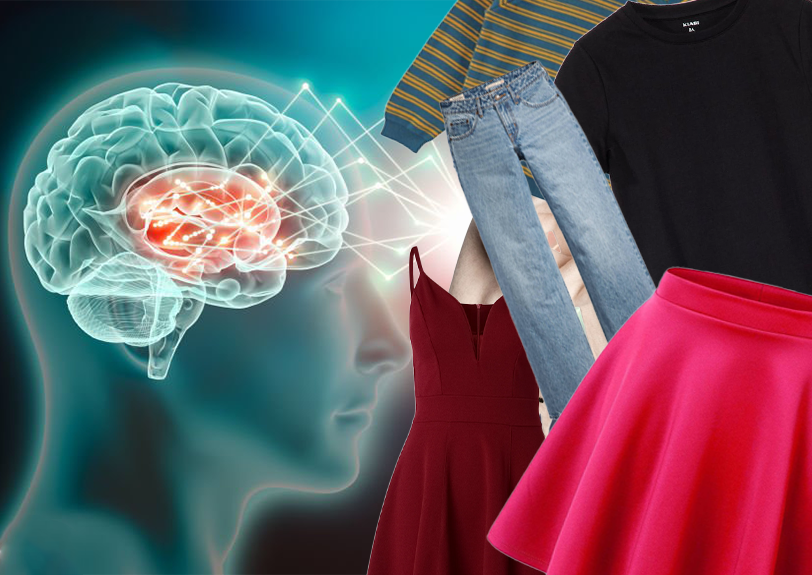
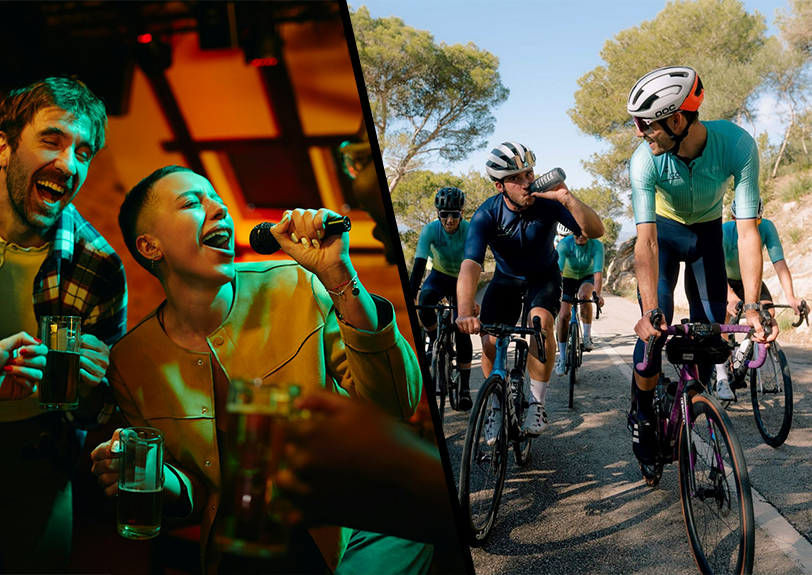

De Nederlandse overheid zet nieuwe drones in om het alcoholgebruik van burgers te monitoren en zo een nuchtere samenleving te bevorderen. Deze hightech bewakers stuiten op zowel enthousiasme voor volksgezondheid als kritiek op privacy-inbreuken.
Stap in de toekomst van mode met kleding die niet alleen stijlvol is, maar ook jouw gedachten kan afspiegelen. Ontdek de innovatieve technologieën achter deze slimme outfits en de ethische dilemma’s die ze oproepen.
Hoe krokodillen plotseling Amsterdamse grachten hun nieuwe thuis maken en wat dit betekent voor de lokale toeristenindustrie. Lees over de onverwachte economische boom en de veiligheidsmaatregelen die de stad neemt.
Kippen gaan zelfstandig ondernemen en verkopen hun eieren rechtstreeks via een innovatieve app. Ontdek hoe dit de traditionele landbouw verandert en welke voordelen zowel boeren als consumenten ervaren.
De Universiteit van Verbeelding biedt een baanbrekende cursus aan waarin studenten leren hun bewustzijn astrale te teleporteren zonder fysiek aanwezig te zijn. Deze innovatieve onderwijsaanpak genereert zowel enthousiasme als scepsis binnen de academische gemeenschap.
De Universiteit van Verbeelding biedt een baanbrekende cursus aan waarin studenten leren hun bewustzijn astrale te teleporteren zonder fysiek aanwezig te zijn. Deze innovatieve onderwijsaanpak genereert zowel enthousiasme als scepsis binnen de academische gemeenschap.